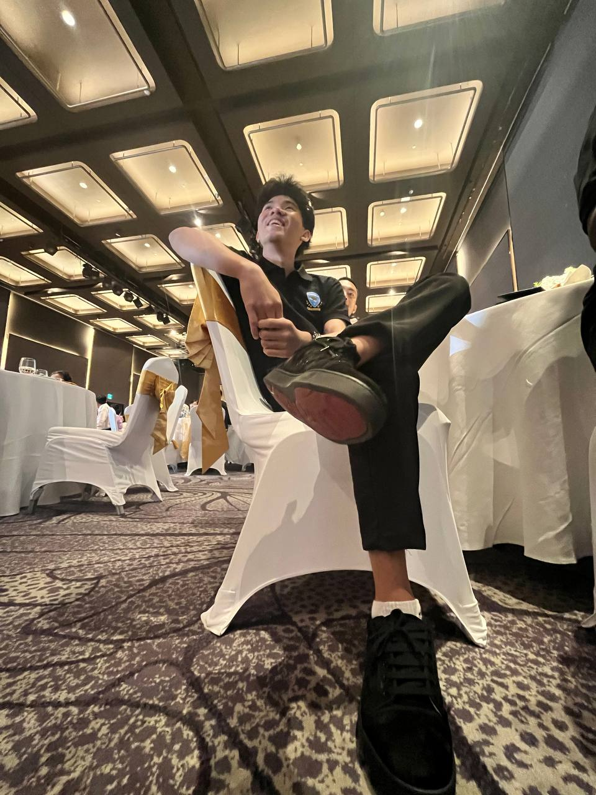
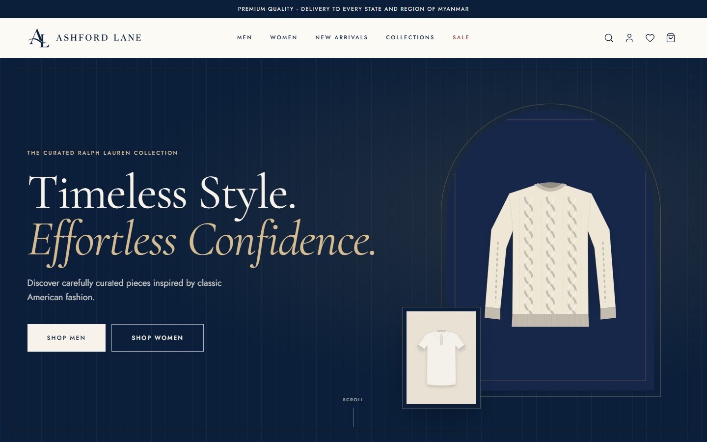
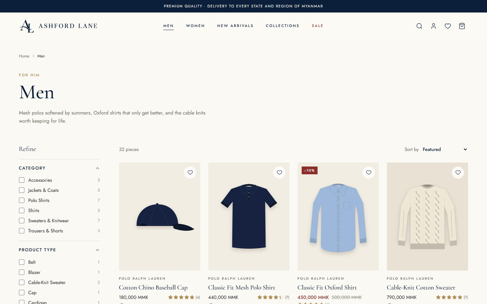
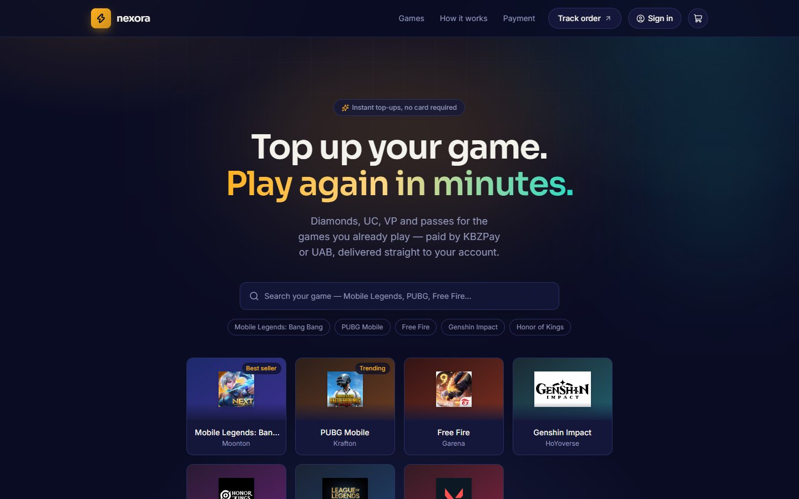
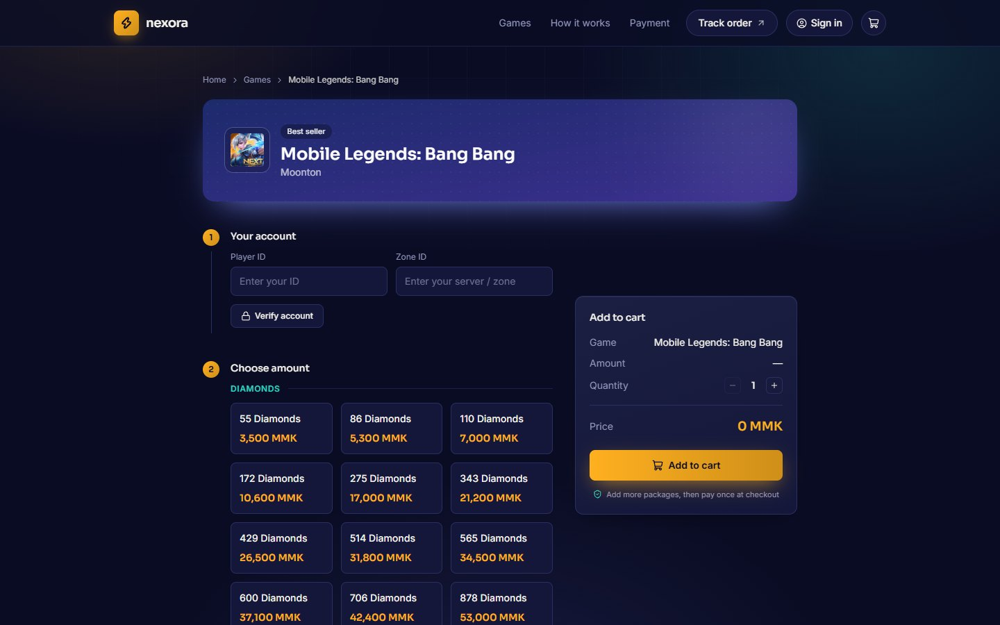
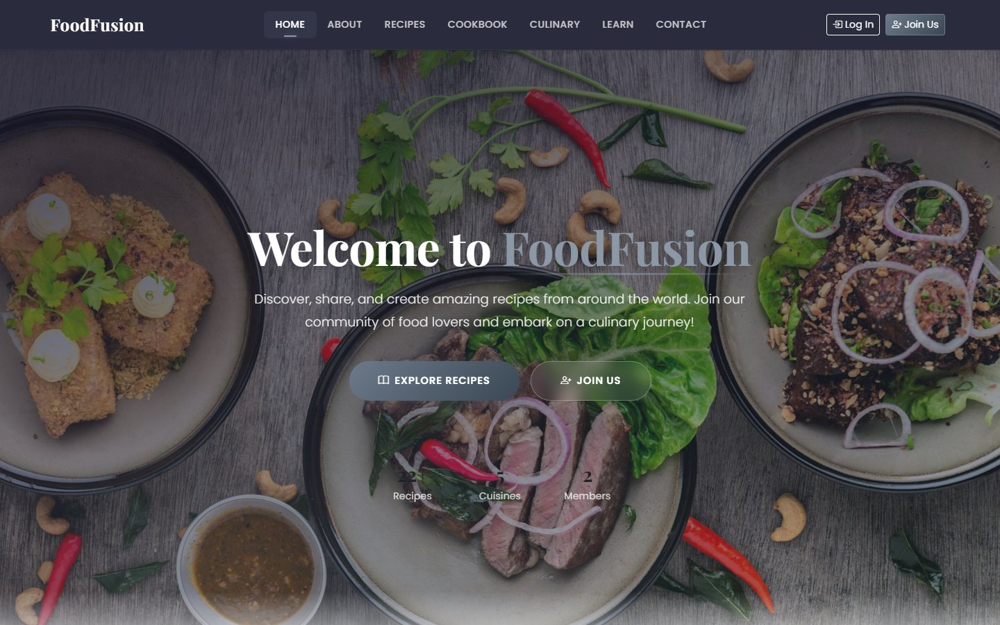
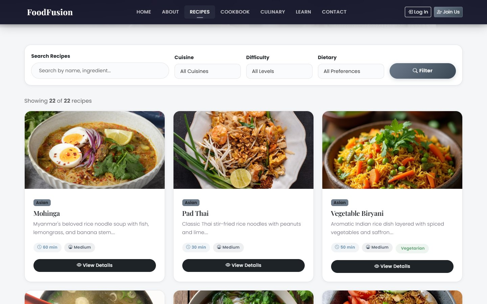

Frontend
Responsive, accessible interfaces that feel fast and look great on every screen.
- HTML
- CSS
- JavaScript
- TypeScript
- React
- Next.js
- Tailwind
Available for new opportunities
Hi there, my name is
I design & build web apps, delightful interfaces, fast APIs and things for the internet.
A developer who turns ideas into fast, accessible and beautifully crafted digital experiences — from pixel-perfect interfaces to the code that powers them.

⚡ Fueled by curiosity
Hey! I'm Ye Paing Aung — a developer who's happiest at the intersection of design and engineering.
My journey started with a simple curiosity about how websites work, and quickly turned into a love for building things people genuinely enjoy using. Today I focus on crafting responsive, performant web applications with clean code and thoughtful details.
When I'm not coding, you'll find me exploring new tech, sketching UI ideas, or learning something completely new I believe the best builders never stop being students.
Responsive, accessible interfaces that feel fast and look great on every screen.
APIs and data models that are reliable, secure and easy to scale.
Turning rough ideas into clean, intuitive designs with an eye for detail.
Shipping confidently with modern tooling, version control and automation.


A complete online store for premium, classic American-style fashion, selling across Myanmar — from browsing and checkout to an admin dashboard that runs the whole business.


A game top-up store for Myanmar players: verify your player ID, pick diamonds or UC, and pay with KBZPay, UAB or an in-site wallet. Orders are delivered automatically through a top-up provider API, and an admin panel handles payment approvals and wallet deposits.


A recipe community built for my NCC Back-End Web Development assignment. Browse recipes from five cuisines with search and filters, and share your own in a community cookbook — secured with hashed passwords, CSRF protection and login lockout.
Present
Twinkle College
Currently studying computing through the NCC Education programme, building strong foundations in programming, software development and core computing concepts.
Dec 2025 — Apr 2026
Internship · 5 months
Started on the software engineering side, then moved into digital marketing where the company needed help most — producing promotional videos and designing pamphlets for the projects the company sells.
05 — What's next?
Have a project in mind, an opportunity, or just want to say hi? My inbox is always open — I'll do my best to get back to you within a day or two.